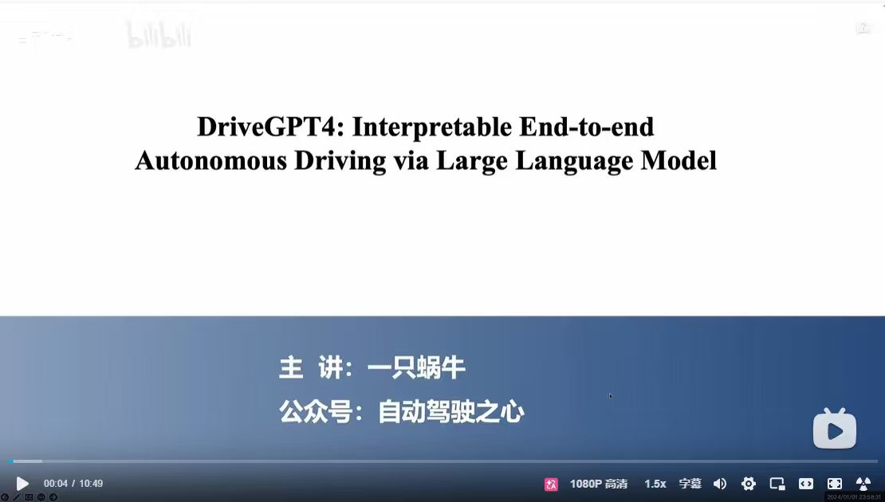
主题: Interpretable End-to-end Autonomous Driving via Large Language Model
主讲: 一只蜗牛
来源公众号: 自动驾驶之心
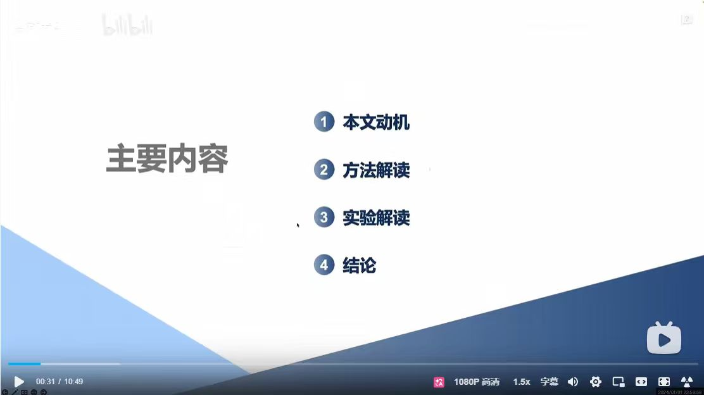
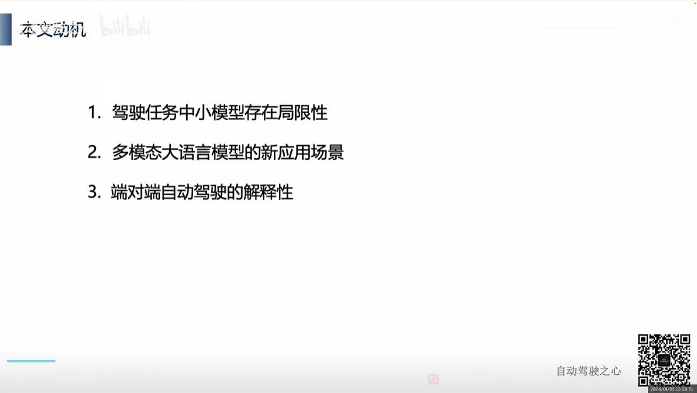
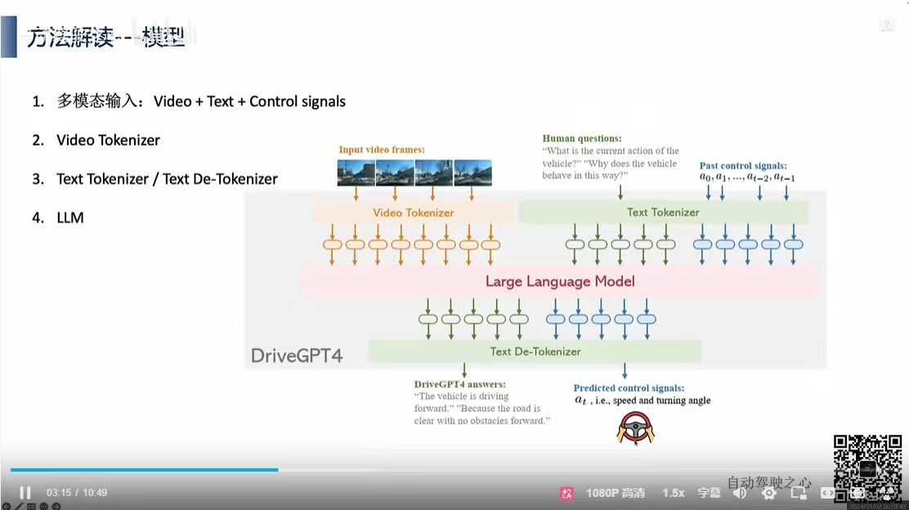
核心输入: Video + Text + Control signals
多模态数据输入 -> Encoder 序列 -> LLM 处理 -> De-Tokenizer -> 决策与逻辑输出
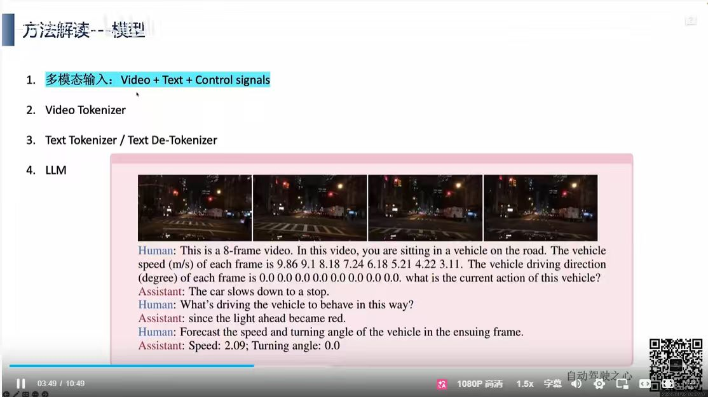
DriveGPT4 多模态交互过程：
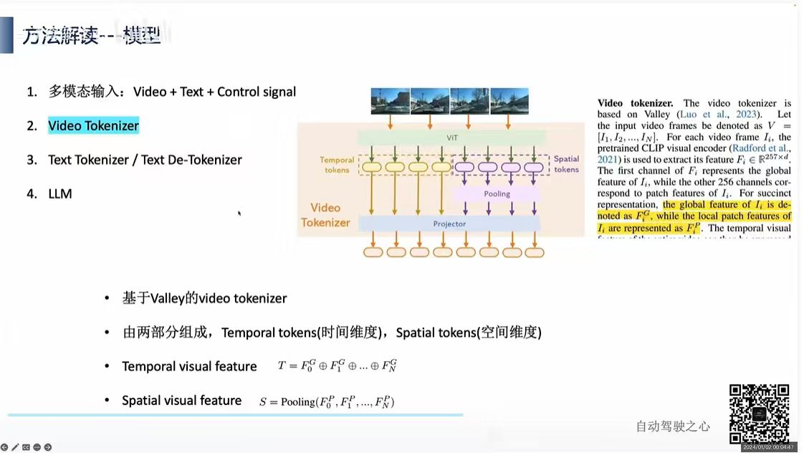
核心架构: 基于 Valley (Luo et al., 2023) 改进的视频标记化方案。
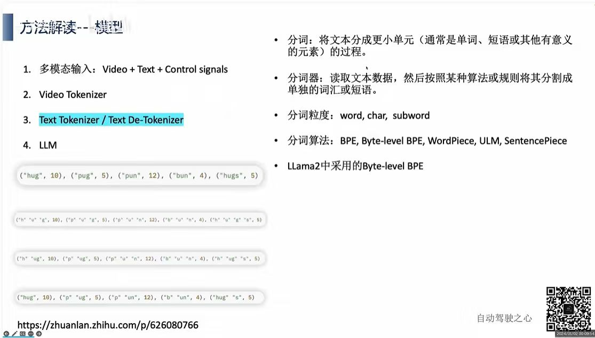
展示了将单词（如 "hug", "pug" 等）拆分为不同层级 subword 的过程，体现了分词机制对词汇的解构与编码。
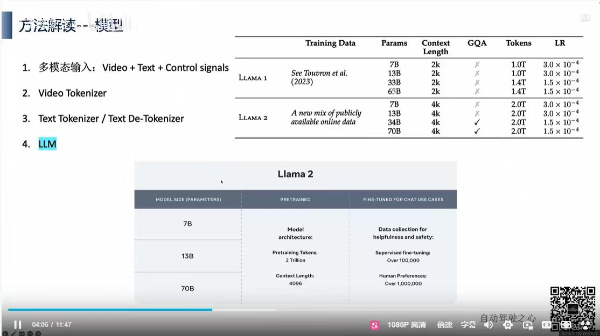
DriveGPT4 采用 Llama 2 作为核心基座模型。
| 模型系列 | Training Data | Params | Context Length | Tokens |
|---|---|---|---|---|
| Llama 1 | See Touvron et al. (2023) | 7B-65B | 2k | 1.0T-1.4T |
| Llama 2 | A new mix of publicly available online data | 7B-70B | 4k | 2.0T |
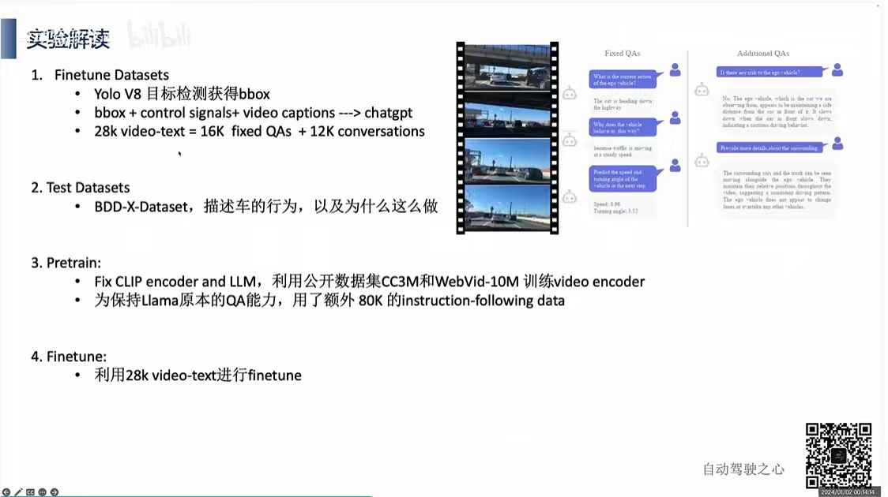
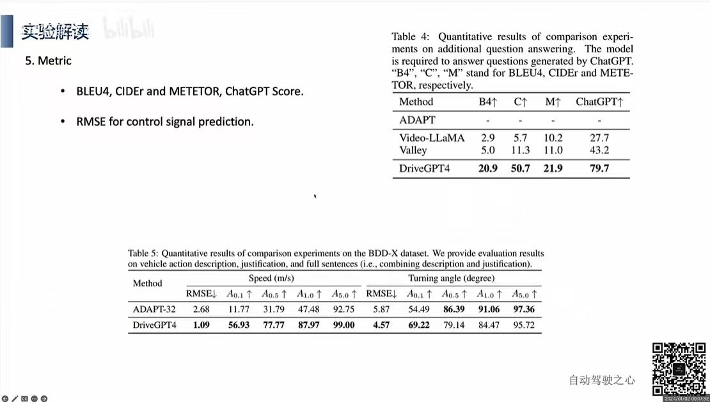
Table 4: 问答质量对比
Table 5: BDD-X 数据集定量结果
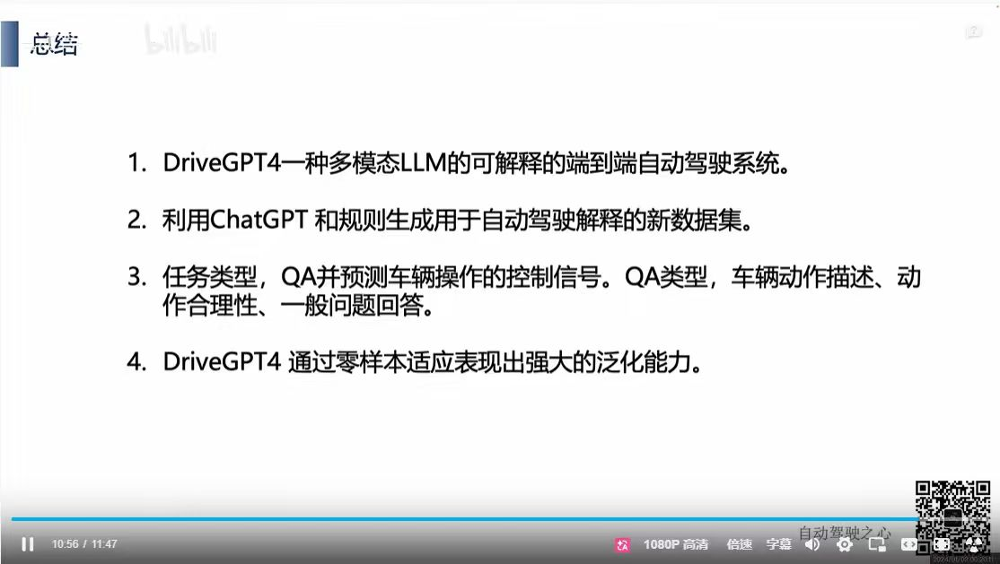